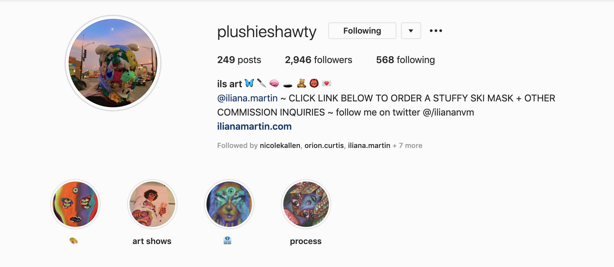
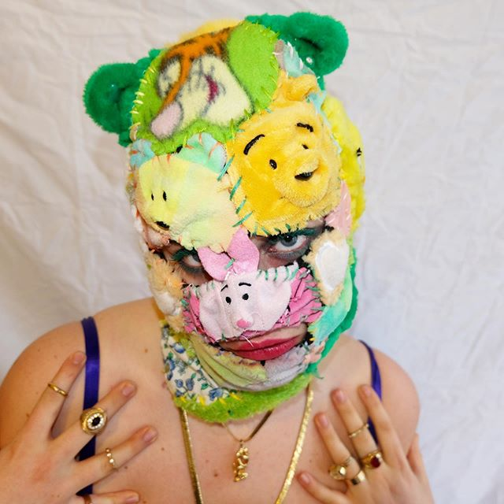

iliana martin
is an 18 year old chicago based artist.i had the privilege of interviewing her about her work and being an artist in the age of social media.

Q: Tell me a little about yourself and your work
A: My name is Iliana Martin and I’m an 18-year-old artist based in Chicago. I attend School of the Art Institute of Chicago with no specific major, right now I’m just experimenting and utilizing all the resources I’m given. I’ve done work in many mediums, for a long while I considered myself a painter but since attending SAIC I’ve transitioned into more hands-on materials such as sewing, sculpture making, 3D printing , using paint in ways I haven’t before, reconstructing clothes and other items. I am also quite obsessed with stuffed animals right now.
Q: Your art has a distinctive look that is very much your own. How did you develop this style?
A: There are many reasons why I have the style I do and I think a lot of it takes influence from my dad’s work and growing up with an artist. He taught me the basics and encouraged a unique style as I grew up. It also might have something to do with me going to catholic school for 8 years and wearing uniforms and only being allowed to draw lollipop trees and blue skies. I felt like my creative and self expression was being limited and restricted so outside of school I sought other influences and inspiration kids my age typically wouldn’t have. My style has changed throughout the years but some key characteristics are my use of vibrant colors , kind of congested, filled compositions, but also maintaining balance. I like to consider myself self-taught so my style has gone through a good amount of trial and error.
Q: When did you decide to start selling your art?
A: The day one of my favorite twitter artists retweeted one of my pieces out of nowhere, and I gained a few hundred followers in a day. I started freaking out because I had never received that much recognition for my work, as I was more posting it for myself. But people began messaging me wanting to buy prints and pieces and everything else and I was like oh, ok, people actually want my shit ... that’s tight... so I kept on posting my art, started making prints and stickers and many other things and got a
website. Since then my Twitter has grown by thousands of followers and although my content has changed throughout this time I get a few thousand likes on my pieces. Most of the work I do now that isn’t school-related is commissions.
Q: Has the quick shareable nature of social media made it easier to build a reputation as an artist?
A: Fairly easy in my opinion, especially on Twitter. All it takes is for you to be consistent with your posting, sharing other artist’s art as well, and putting out good content. That’s very important. Social media is the reason I have grown so much as an artist and if it wasn’t for
Twitter or
Instagram then I would be struggling to sell my pieces most definitely.
Q: Do you feel pressure to be constantly posting and producing content because most of your business comes as a result of social media?
A: Oh yeah, I definitely do and honestly that sucks sometimes because if social media wasn’t such a lucrative tool in growing my business and establishing myself as an artist I wouldn’t be on it. If I don’t constantly post then I lose mad followers which in turn is like losing recognition for all the work you’ve worked hard on.. so I try to keep it consistent but I also have a life, and the projects I’m working on at school right now aren’t like pieces I used to make where I could grind them out in a few days... they take weeks and people generally don’t like to wait that long. They want to see constant good content but it’s honestly just unrealistic. I be trying though.

Q: Most of your art in the past has been painting or graphics-based but recently you have been experimenting with new mediums like using stuffed animals to make masks. How did you get that idea?
A: In my research class last semester, we had to make an entire project off of an artist given to us by our professor. I received Nick Cave , who’s work I greatly admire and is most definitely one of my favorite artists. He made a crazy soundsuit piece out of stuffed animals, and also a sequin ski mask , and I thought to myself it would be awesome if I mashed those two things together... so I did  . And it was really fun to make, although it felt a little sadistic to amputate innocent stuffies. Nonetheless, it was one of my favorite projects.
Q: The new projects with plushies that you have been producing have been gaining much more popularity online- I’ve noticed you get thousands of interactions on Twitter. Has this rise in support brought you more customers?
A: I didn’t think much of it though and did not expect it to blow up like it did on my Twitter. It only takes one tweet to blow up for you to get recognition, and that’s what happened with the ski masks . I gained like 1000 followers in a day after I posted the mask. I was getting hundreds of messages of people wanting commissions for their own mask and that’s currently like my job, making ski masks for people once a week, 200$ each or more. And I’m not complaining. I still have to balance it with school, but yea most definitely this rise in support has brought me many more customers and recognition.

Q: Do comments you receive online influence what you choose to make and post?
A: I mean yea, to an extent. I started losing a lot of followers because I wasn’t posting strictly paintings anymore, but I’m not going to stick to one medium my whole art career so people can enjoy my work. I make my work for myself and myself only, and it’s a nice bonus people enjoy it. But when I posted my ski mask and it blew up, and people wanted to buy them, I’m not going to turn that down- I loved making it and could make money while doing it, so yea that influenced me to post more content like that for my benefit and also my viewers benefit.
Q: Do you think there are any negatives that come with posting your work online for anyone to see?
A: I’d say the biggest negative is having people potentially steal my idea(s), obviously, that’s always a risk for any artist but I’ve already seen some knock off ski masks and I’m just like ... aight. It’s not like I can do anything about it and I’m confident mine are better anyway lol. Obviously I’m not the first one on the planet to work with stuffed animals as a medium and I’m not claiming using stuffed animals is my idea because it’s not. But my concept when I made the ski mask was original. And it does suck to see people try to take that from me, but at the end of the day, I don’t mind much as long as it’s not fucking Dolls Kill or something. I hope my work speaks for itself and people will know that I’m the original artist because this is my job and I rely on my art to make money, not just for self-satisfaction.
Q: Have you made any meaningful interactions or collaborations due to your presence online?
A: Since the ski masks, I have definitely been in touch with larger influencers. Right now I’m making a hoodie for Yung Jake . I think with time though more connections and meaning interactions will come. I haven’t done any collaborations although people ask me all the time, that’s not exactly my style, at least not right now.

Q: Do you think you would be as successful as you are without social media as a tool?
A: Most definitely not. Like Dababy and I have said before, If social media wasn’t such a lucrative tool for the business then I wouldn’t be on it. I need it to grow. It helps me with every aspect of my artistic career and that’s how it is. I don’t like the pressure of having to constantly be on twitter or posting on Instagram in order to keep my followers, at the end of the day I could give less of a shit about social media but as much as we say we don’t need it, we do. At least if you’re an artist and want to get your work remotely out there.
Q: Do you have any advice for new artists that are starting out and want to use social media to build their brand?
A: I’m not great at advice but honestly, if you really think your art is good, start posting it. Consistently. Make an art account. Get a website. Use
Printful ~not sponsored~. If you want to be successful you really have to dedicate yourself to it, at least for a while until you have enough followers you don’t have to be as consistent anymore. Message and retweet fellow artists, trade, buy from them and support them, befriend them and make connections. These are all super small things that add up to mean a lot in the long run.